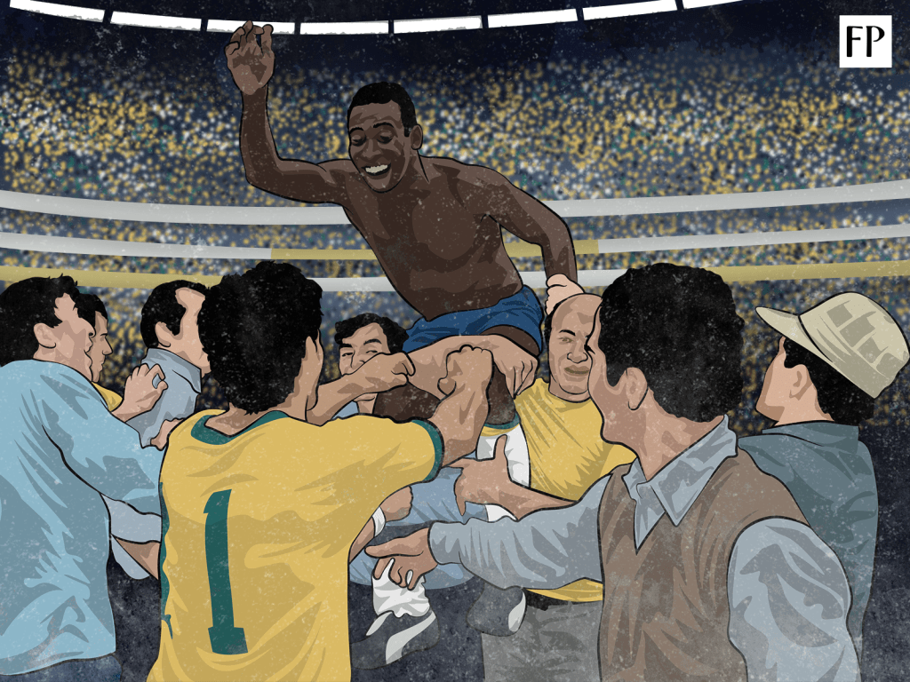

He is one of the best player to come out of the great country of Brazil. Edison Arantes do Nascimento is his full name but he is better known to the world as "Pele". He was a phenomenon the like of which we may never see again. His professional career started in 1956 when he signed for Santos Football Club in Brazil. He began playing for them at just 15-years-old, and even then people could tell that this was a special player. In fact, the man who took him to Santos predicted that he would become the greatest player in the world. He scored on his debut for Santos and by the end of his first season in Brazil, he was the league's top scorer, at just 16 years of age. It was also at this age that Pele was first called up to the Brazilian National squad. Again, he scored in his debut.
At just 17 years of age he was called up to Brazil's 1958 World Cup squad. At the time he was the youngest player to have ever played at a World Cup. His goal against Wales in the quarter-finals made him the World Cup's youngest ever scorer, and a hat-trick in the semifinals broke another record—him being the youngest player to have scored a World Cup hat-trick. Another record was broken when he was the youngest player ever to play in a World Cup final, and yet another one when he scored twice in that final, helping his country to a 5-2 victory over Sweden. His first goal was voted one of the best in World Cup history. So by the age of 17 he had been top scorer of his domestic league and won a World Cup. .
The interest from big clubs worldwide was inevitable. However, the government of Brazil declared him an "official national treasure" to prevent him moving, such was his importance. The 1962 World Cup was not as successful for Pele. He injured himself early on in the tournament, and so played no further part in the victorious Brazil side. However, in 2007, FIFA announced that Pele would be awarded a World Cup winners medal for that tournament. That gave him his second World Cup success at just 21. The 1966 World Cup was an even worse one for Pele. Brazil were often kicked off the park, and they went out in the first round, after which Pele expressed his desire never to play in a World Cup again.
In 1969, still playing for Santos, Pele scored his 1000th goal in all competitions. This was unprecedented, especially for a player playing in the play-maker position. His goals to games ratio was quite remarkable. 1281 goals in 1363 games is unlikely ever to be beaten. In 1970 Pele went back on his promise never to play in a World Cup again, and helped Brazil to win the tournament with perhaps the greatest team to ever play football.
One particularly memorable moment for Pele at this World Cup was that save by Gordon Banks, which Pele himself admits was the greatest save he had ever seen. After leaving Santos in 1974, he played in the United States for a while, but he was long passed his heyday. Pele is the only player to have won three World Cups, and only one of two to have scored in four separate World Cups. He really had no weaknesses. A powerful shot, a fantastic header, excellent dribbling, pinpoint passing, great pace, and, of course, a prolific goal-scoring ability. Named Athlete of the Century and Player of the Century, and widely regarded as the greatest player to have ever kicked a ball, this has been a tribute to Pele.
By Jefferson Huisa, QCC Student.
Fri Sep 28, 2018
References:
Bleacher Report.
Biography.
Goal Facts about Pele.